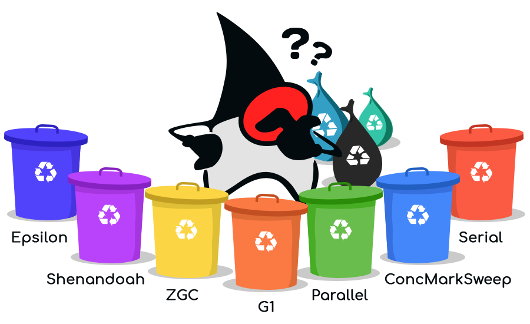

Memory Management
Although Java uses the new operator, just like C++, it has no corresponding delete operator. That's because in Java, when you run your program, a set of smaller programs run at the same time, scouring the heap, looking for unused objects, and automatically freeing them. This automatic memory management in Java is called garbage collection.

In contrast, C++ manual memory management, using raw pointers with new and delete, requires an almost superhuman attention to detail. Mistakes will cause your program to leak memory, or, to corrupt the memory manager itself.
Let's look at the three most common pitfalls that accompany manual memory management: the memory leak, the dangling pointer, and the double delete. In the future, you can learn about C++11's new smart pointers, which ameliorate many of the failings of pure manual memory management.
 This course content is offered under a
CC
Attribution Non-Commercial license. Content in this course
can be considered under this license unless otherwise noted.
This course content is offered under a
CC
Attribution Non-Commercial license. Content in this course
can be considered under this license unless otherwise noted.